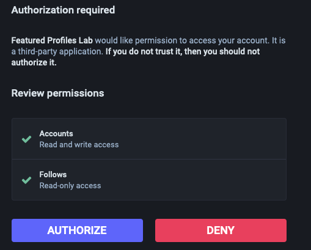

What are Featured Profiles?
Featured Profiles were a way to highlight exceptional followed accounts.
You can currently still deem a followed profile as featured, but you can't view your selections anywhere.
This is a Mastodon specific feature.
I've written a blog post about the history of featured profiles and go into more detail about the topic if you're interested.What does this application do?
This application allows you to easily view, add and remove featured profiles from your account.
Like the idea of Featured Profiles? Let the developers know (requires GitHub login).
👍🏽 Give a thumbs upWhat permissions are you asking for?
When you login, you will be asked to allow the application to have specific permissions to your account.
This tool requires access to make updates to your account for full functionality. It will not take any actions on your account other than managing your featured profiles and listing your followed accounts.
I'm not comfortable giving this app access to update things on my account.
If you don't want to allow full permissions, you can still view your existing featured profiles. Toggle the "Security Conscious?" switch on the login page to enabled. When you login, you'll notice that Mastodon is only asking for read only access.
You won't be able to add or remove your featured profiles from the app this way, but you can still view them.
When using this mode, you'll notice you've still got the action buttons to feature or remove profiles. Clicking them takes you back to your official Mastodon instance where you can add and remove them manually. Then, come back to view them by using the refresh link in the menu.
Is my data secure?
Your data is only stored in your browser's local storage, and is not sent to any external servers. The site is secured with a valid SSL certificate.
A privacy focused, open source analytics solution is installed called GoatCounter. No personal information is collected. The stats are publicly available. It's mostly just a hit counter so I know if people are using it 😀.
Why build something if it's not fully supported?
I have a lot to learn. Vue, Mastodon, and Open source are all new concepts to me. This provided a unique opportunity to get fairly detailed into an area of Mastodon that hasn't been explored lately.
This code is unmaintained
I really take Julia Evan's code maintenance guidelines to heart that are included in her small projects.
When I saw these declaratives, I was initially taken aback by the tone, but I now fully admire the upfront honesty.
- I made this for me, to learn new things.
- I know the code isn't perfect.
- If you find a bug, please let me know! But don't expect them to be fixed quickly...or at all.
- I'm not planning to take feature requests, but share your ideas anyway, who knows?!
- It's open source under an MIT license - take it and do what you will.
Tell me about the code.
You can find all the details about the technology stack and view the entire codebase on GitHub, but here's a summary.